Chapter 4 Camera manipulation
The problem they have with the measurements they have made through the camera they own is that they find a dark current per pixel negative, which is physically impossible. It was -0.11 ADU / s / px. The track that was proposed to me is that the first measurements were made on a time interval too small so the camera heated, so that it had more noise than a longer time interval. However, being in the dark, the noise should accumulate over time so, become more and more important. The data and graphics were processed in Python and I had to use my computer skills in order to appropriate the principles of the algorithm. We can find this code, provided by Mr. Lorenzo BUSONI, that I commented in Annexe 3.
Next, we can see the distribution of the average number of pixels on the different integration times as a function of the dark current that was obtained.
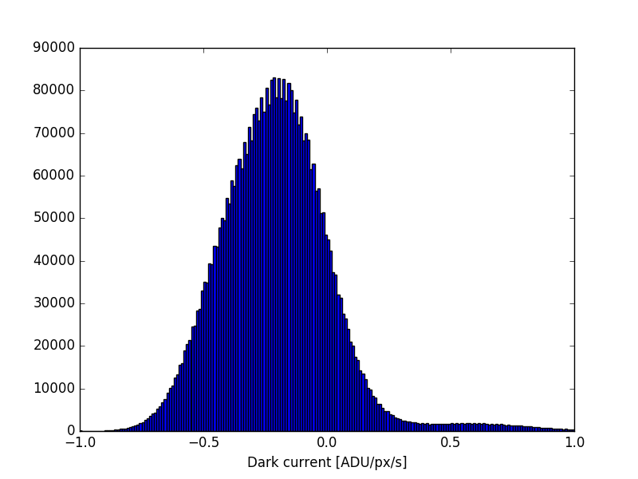
I made different shots with the camera in the dark. We first took 100 with an integration time of 1ms in order to determine the dark current. Then we took another 200 to compare the results with the first 100. You can see the control screen used in the photo on the right to capture these 200 images. Then, we have taken 200 for integration times of 1ms, 10ms, 100ms, 500ms, 1s and 2s. I created an algorithm that processes the data. A first for the first 100 images, a second for the next 200 and finally a last one that treats the remaining ones. They are grouped into 3 different files, each containing its corresponding algorithm. To use my algorithms, I had to rename the images because their name had no link to open them one by one in a loop. They make it possible to calculate the average values and temporal variances per image pair for the same integration time. The spatial averages (on all the pixels of the image) of these temporal averages and variances are also calculated. The fact of calculating the temporal variance by a pair of successive images and then averaging them makes it possible to keep the non-correlation between the data of the different images, which is necessary in order to be able to use the formula making it possible to find the reading noise. and the gain (see below).
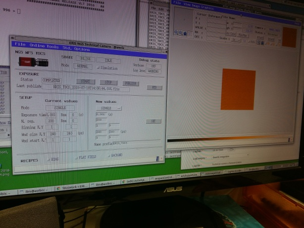
Definition of the time average for a given integration time and for a pixel :
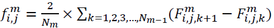
Definition of the spatial mean of the temporal averages :
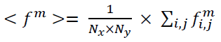
Definition of the variance between 2 values of a pixel : Vs(S1-S2)2
But we also have:
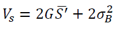
with:
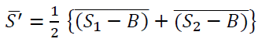
and:
- m : integration time
- i : row number of the pixel
- j : column number of the pixel
- k : number of the image for an integration time m
- Nm : number of image couples for an integration time m
- f : temporal mean of the pixel value (ADU)
- G : camera gain (ADU/e-)
- S1 : pixel value of the first image of the couple (ADU)
- S2 : pixel value of the second image of the couple (ADU)
- B : noise for the weakest integration time (ADU)
- σB : standard deviation of reading noise (ADU2/e-)1/2
The first measurements prove to be unsatisfactory because to read the reading noise, the only noise not depending on the integration time, it is necessary to process on a panel of more important integration time and to add external light in order to increase the variance and to have a more significant curve. Similarly, to determine the dark current, it is necessary to have a longer integration time panel. The possible measurement range is 75 μs to 53.7 s. So I decided to take additional measurements in the dark with time intervals of 10s and 50s. For reading noise, I measured with an integration time of 1ms and different levels of incoming photons in the lens of the camera by letting the outside light rays enter the camera lens. It was therefore necessary to use the algorithm previously used for the dark current by processing the measurements they were dedicated to it. Only the graph plot changes.
After taking the extra measurements for the dark current, I noticed that there are two trends and that the transition from one to the other is between the integration times of 2s and 10s. So, it is necessary to take additional measures with integration of 5s, 6s, 7s and 8s in order to be able to transition less. All images taken so far by 240. See opposite the graph obtained.
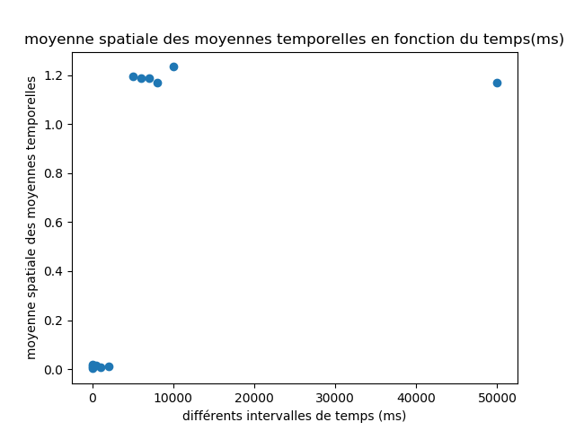
Following the analysis of these results, the difference to overcome was due to the fact that the first measurements were made with only a cache in front of the lens of the camera because there was nobody so the lights were off (low level) . While for the following, I added curtains all around the table where the device was located because there were other people in the laboratory and they needed to turn on the lights (landing high). The rightmost points are due to a problem of data encoding by the acquisition software. The data was coded only on 1 byte which did not allow to reach values higher than 255 while it is possible with this camera. People in the lab had to reprogram it to double bytes. So I made another measurement, taking images of size 2048 by 2040 which corresponds to the maximum size allowed by the device. Thus, 10 images per integration time were sufficient.
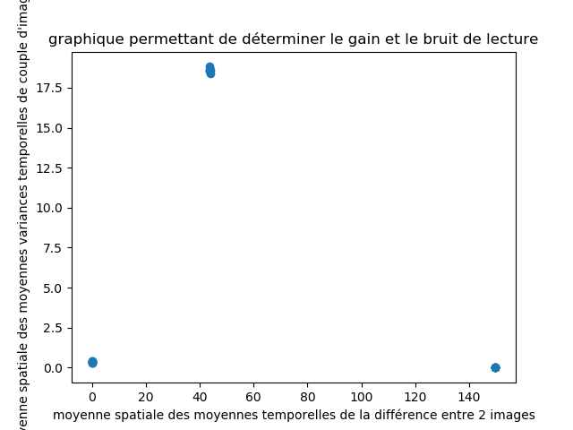
Then, I took the integration times of 1, 2, 5, 10, 15, 20, 25, 30, 35, 40, 45 and 50s to measure the dark current in addition to the groups of images taken with different levels of brightness. I also added the 99.7% confidence intervals by considering a Gaussian curve for measurements made as part of the dark current determination. I reused this data for reading noise determination. Here are the graphs obtained:
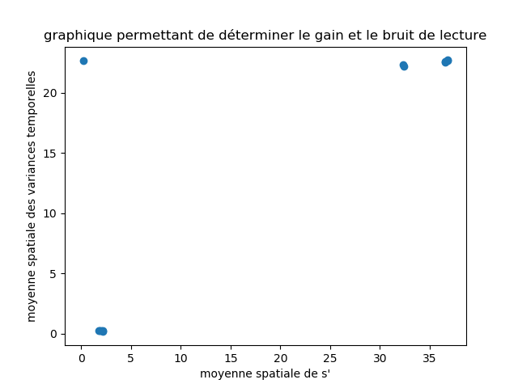
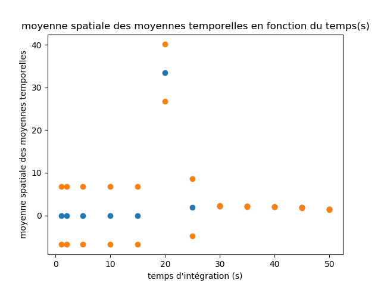
It can be seen that for the second graph, from an integration time of 30s, the 99.7% confidence interval of the pixel values decreases sharply. In addition, I think the value for the integration time of 20s is wrong. The following code, in python language, allowed me to visualize the images taken:
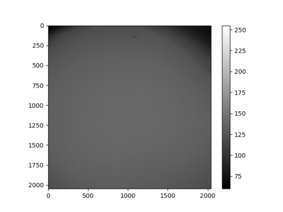
Python code for this image:
import astropy.io.fits
import matplotlib.pyplot as plt
plt.imshow(astropy.io.fits.getdata('86.fits'), cmap='gray') # image 86 for exemple
plt.colorbar()
plt.show()